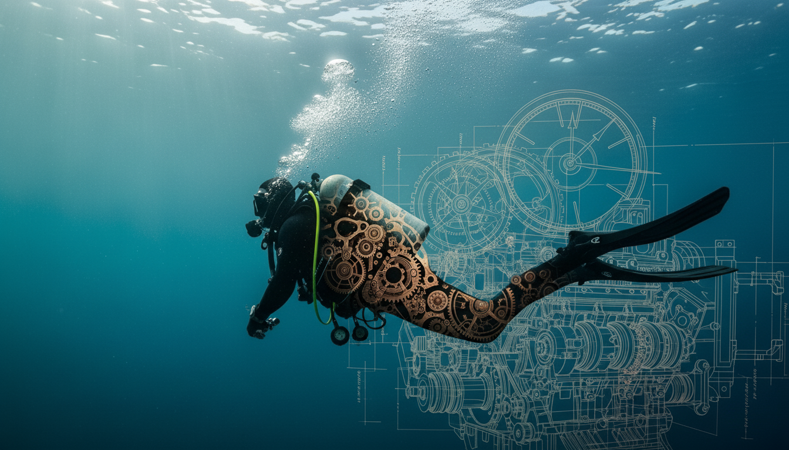

FILOSOFÍA DIR
FILOSOFÍA DIR
·
7 MIN
Por qué enseño sin rodillas: los dos mitos que frenan a la mayoría de buceadores
Hay dos ideas que se repiten en la mayoría de academias y que limitan al buceador desde el primer día. Las conozco bien porque las viví en mi propio primer curso.
LEER
→